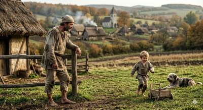
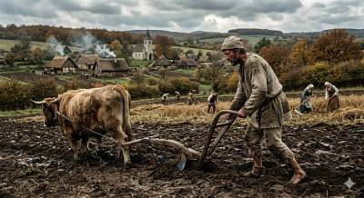
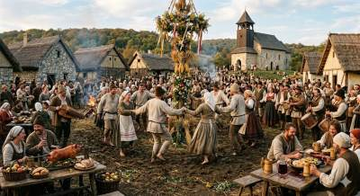

Jellemző öltözködés

Mit viselek?
Hosszú ing vagy gatya, ami térdig ér, hozzá szűk nadrágot vagy bocskort. Télen birkabőr suba vagy vastag posztóköpönyeg véd a hidegtől. Fejemen nemezsüveg vagy kalap. A feleségem hosszú inget, szoknyát, kötényt és fejkendőt hord.
Mit árul el rólam a viseletem?
A ruhám egyszerű, fakó és praktikus. Mutatja, hogy jobbágy vagyok: sok munka, kevés dísz, semmi luxus.
Környezet

Milyen házban élek?
Kis, egyszobás vályog- vagy sárfalú kunyhóban, földpadlóval. A tető nádból vagy szalmából készült, füstlyukkal a kémény helyett.
Van udvarom? Földem?
Van kis udvarom tyúkokkal, disznóval, esetleg tehénnel. Saját telkem van, de a nagy föld az úré.
Hogyan néz ki a település?
Szétszórt falu, házak összevissza építve, középen templommal.
Életmód

Hogyan telik egy napom?
Hajnalban kelek, állatokat etetek, majd egész nap a földeken dolgozom. Este javítom a szerszámokat.
Mi a különbség hétköznap és ünnep között?
Ünnepnapokon nem dolgozunk, templomba megyünk, együtt eszünk, néha táncolunk.
Mivel töltöm a szabadidőmet?
Beszélgetés, éneklés, télen kézimunka és javítás.
Feladataim

Milyen munkát végzek?
Földművelés, robot a földesúr földjén, adófizetés.
Kinek tartozom engedelmességgel?
A földesúrnak és az egyháznak.
Ki függ tőlem?
A családom: feleségem és gyermekeim.
Szabályok és hagyományok

Milyen szabályok szerint élünk?
Robot, adó, engedelmesség a földesúrnak, templomba járás.
Milyen szokásaink vannak?
Aratás utáni ünnepségek, lakodalmak,karácsony, húsvét.